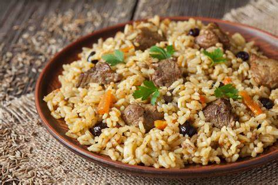

Pilau

A Kenyan cuisine made out of rice, beef and various spices such as pilau masala, tangawizi and garlic.
Ingredients
- Tangawizi
- Garlic
- 1kg Rice
- Salt
- Cooking Oil
- Coriander
- Beef
- Onions
- Tomatoes
- Chilli
Steps
- Put the meat in a sufuria to boil till it is tender.
- Remove the meat from the sufuria and add onions along with enough cooking oil.
- Let the onions cool till they are golden brown.
- Add garlic and tangawizi paste and stir till it is uniformly distributed.
- Add rice, salt, pilau masala till satisfaction.
- Fill the sufuria with water and let the mixture cook.
- Using tomatoes and the left over onions, make kachumbari.
- Serve the pilau while hot with a side of kachumbari.